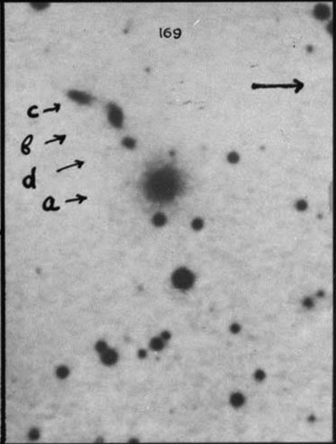
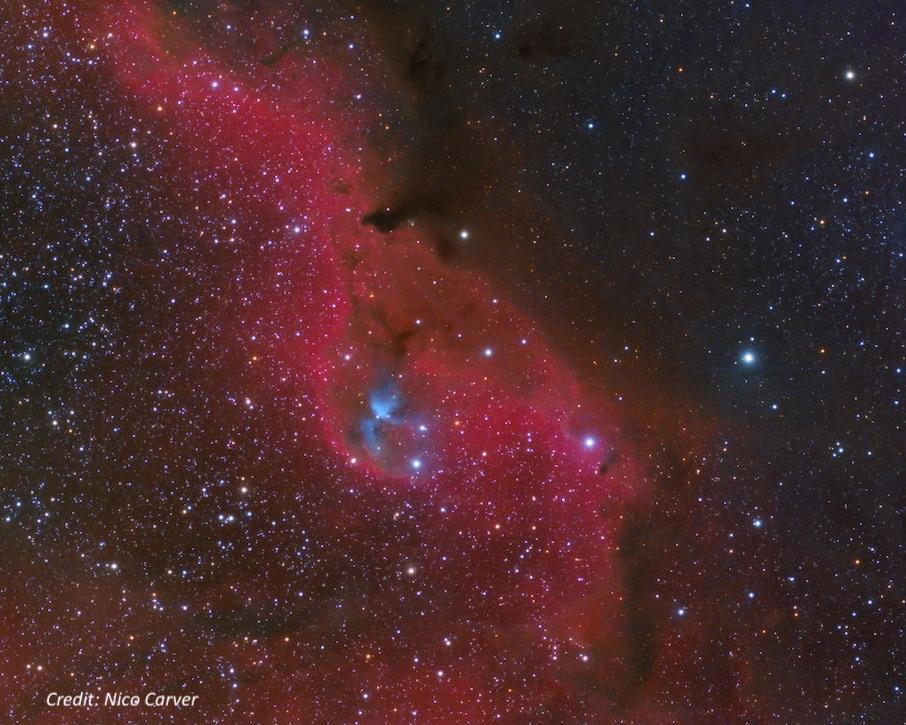

Cederblad 51, an E.E. Barnard discovery
- Name: Cederblad 51
- Aliases: Simeis 3-52 = Bernes 89 = Parsamian-Petrosyan 29 = GN 5.28.8
- Type: Reflection Nebula
- RA: 05h 31m 28s
- Dec: +12° 10'
- Constellation: Orion
- Diameter: 4'
- Illuminating star: HK Orionis
- Distance: ~ 1500 light years
- Age: ~1 million years (HK Ori)
I wrote about Cederblad (Ced) 51 in an article titled "The Lost Discoveries of E.E. Barnard" in the November 2020 issue of Sky & Telescope. By carefully examining Barnard's logbooks from Lick Observatory between 1888 and 1895, I found about 80 objects he discovered visually that were never published or reported to Dreyer for inclusion in the IC. Many of these discoveries were made with Lick’s 12-inch Clark refractor. In the article, I wrote,
February 9, 1890
Having observed Comet 16P/Brooks, Barnard swept up Cederblad 51, a weak nebulosity on the north side of 11th-magnitude HK Orionis. This million- year-old star is a pre-main-sequence Herbig Ae/Be binary, still encased in a dusty, embryonic accretion disk. Search for HK Orionis 2.4° to the north-northwest of Meissa (Lambda Orionis), the 3.5-magnitude star marking the head of Orion.
On wide-field images, HK Orionis sits along the north side of the Lambda Orionis Molecular Ring, also known as Sh 2-264. Within this immense star-forming region are young Herbig-Haro objects, T Tauri stars, pre-brown dwarf candidates, and several dark nebulae. Through my 18-inch scope, I logged Cederblad 51 as a 4? wide, diffuse patch just north of the star.

Barnard recorded in his logbook, "Swept up a very faint nebula, it is 1' N and follows two faint stars. The following star = 10m and the preceding star = 11m." Increasing the magnification, he noted the "nebula with 150x is very faint, round, gradually brighter in the middle?, 1' dia, the 2 stars are involved."
So, why didn't he publish the discovery? I mentioned in my article that "Computing precise positions of new nebulae was a time-consuming task, and by the late 1880s astronomers had already cataloged more than 7,800. His true passion was sweeping for new or known comets [and later observing planets and their satellites], so he spent a limited amount of time on most nebulae encountered along the way."
He included the nebula in the table to Plate 6 in his 1927 "A Photographic Atlas of Selected Regions of the Milky Way." Plate 6 shows it at the south end of dark nebula Barnard 30, and in his notes for B30 he mentions "a small fan-shaped nebula close north of a small star in the position 5h 24m 30s +12 03.9 (1875). A small strip of nebulosity extends 5' southwest from this star. These two nebulae are probably the brighter parts of a large obscure nebulosity." There's no mention, though, of his earlier visual observation in 1890, and he likely forgot about it.
As far as the "large obscure nebulosity", here's a bit wider-field image centered on Ced 51, which is 2.4° northwest of Lambda Ori (Meissa).

For an overall view, you can pick up Ced 51 along the "top" portion of the Lambda Orionis Ring (Sh 2-264) in this image. Or stepping back further, for a remarkable view of Sh 2-264 within the entire constellation of Orion, see this APOD.
I first observed Ced 51 in November '23 with my 18-inch f/4.3 and recorded "Picked up immediately at 115x as a fairly faint, large, roundish reflection nebula, ~4' in diameter. Located just north of two mag 11/12 stars. The brighter of these two stars is the Orion-type variable HK Orionis. There was no response to filters indicating little or no emission. It's surprising this object was not picked up in the NGC or IC."
As we now know, Ced 51 would have been in the IC I if Barnard had taken the time to measure a position and report the discovery!
As always,
"Give it a go and let us know!
Good luck and great viewing!"